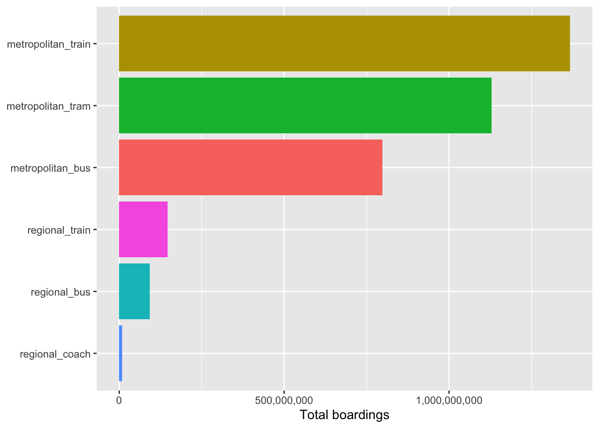
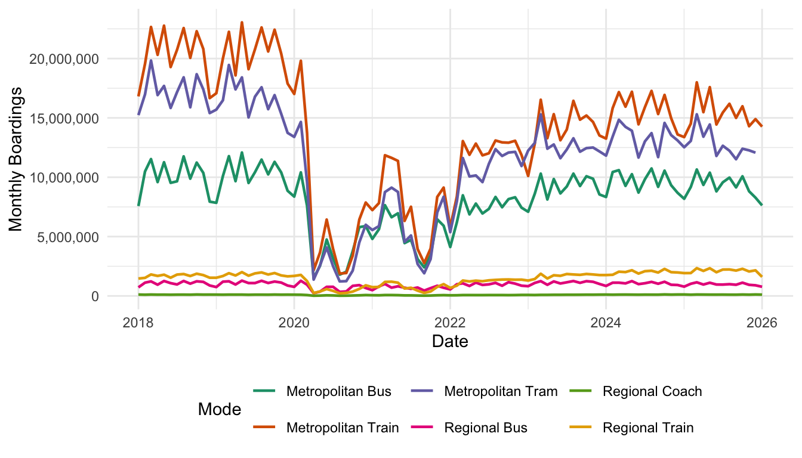

| mode | total_boardings |
|---|---|
| Metropolitan Train | 1,366,415,976 |
| Metropolitan Tram | 1,128,683,201 |
| Metropolitan Bus | 797,593,599 |
| Regional Train | 146,151,590 |
| Regional Bus | 92,905,490 |
| Regional Coach | 8,709,111 |
Which Public Transport Modes Are Most Used in Victoria and Where Should Investment Be Focused?
1 Executive Summary
This report examines the use of public transport in Victoria to identify the most popular modes and the areas where investment is likely to have the most impact. It combines a monthly statewide patronage dataset with the most recent FY2024–25 annual station-entry dataset for Melbourne metropolitan train stations. The analysis will compare demand between modes of transport and will highlight the stations with the highest levels of passenger activity. The aim is to enable practical investment decisions that enhance capacity, reliability and passenger experience in the areas of highest demand.
2 Introduction
Public transport is an important part of Victoria’s mobility network, connecting people to work, education, health care and other day-to-day activities. It is important to understand where the system is most heavily used as the population, commuting patterns and service expectations continue to change. This report looks at two related questions: which modes of public transport carry the most passengers in Victoria, and where investment should be directed in the metropolitan train network.
To answer these questions, the report uses two datasets. The first is a monthly record of boardings across the main public transport modes in Victoria, including metropolitan and regional train, tram, bus and coach services. The second is an annual record of passenger entries at metropolitan train stations in Melbourne based on the latest FY2024–25 data. These datasets allow a system-wide look at mode usage and a station-level look at where demand is concentrated.
The report is designed to identify patterns to inform infrastructure upgrades, service planning and network prioritisation. The report will assist in identifying where public transport investment is needed most by comparing patronage across modes and looking at the busiest train stations.
3 Methodology
3.1 Data source
This report uses two datasets sourced from the Victorian Government’s open data portal, both published by the Department of Transport and Planning and licensed under Creative Commons Attribution 4.0 (CC by 4.0). The first dataset contains monthly public transport boardings across six modes like metropolitan train, metropolitan tram, metropolitan bus, regional train, regional bus and regional coach, covering the period from 2018 to 2025. This dataset allows us to compare how much each mode is used across Victoria and how usage has changed over time. The second dataset contains annual station entries for all Melbourne metropolitan train stations broken down by day type. This dataset helps identify which stations carry the most passengers and where investment is most needed.
3.2 Data preparation
All the analysis was performed in R with the use of tidyverse, janitor, readr and dplyr packages. The raw monthly patronage data was first imported and cleaned by standardizing variable names with the clean_names() function. The numbers of passengers were formatted with commas, and this was removed using the parsing functions to ensure that calculations would be performed correctly. The data is presented in an excel spreadsheet that was originally wide format, containing one column for each transport mode. The data were manipulated to create new data in a long format with each row representing one transportation mode for one month, for comparison and for visualisation.
The same cleaning was performed on the station-entry data set. Variable names were harmonised, passenger data were converted to numeric format, and all data were subsetted to include only those for FY2024–25. This guaranteed consistency in the analysis, and permitted an analysis of the latest station demand patterns. Missing values and formatting inconsistencies were checked before analysis to minimise data quality issues.
Both datasets were cleaned and saved in the data/processed folder. Data processing enables improved data reproducibility by separating data processing from analysis and using the same cleaned data for all team members. The datasets produced were subsequently analysed to compile summary statistics, visualisations and rankings to aid the findings reported in this document.
3.3 Analysis
To compare patronage across modes, total boardings were summed by mode across the full dataset. As shown in Table 1, metropolitan train recorded the highest total boardings over the study period followed by metropolitan tram and metropolitan bus. Regional services made up a much smaller share of total patronage. To identify the busiest stations in the metropolitan train network, stations were ranked by total annual entries for 2024-2025. Table 2 shows the top busiest stations with Flinder Street, Southern Cross and Melbourne Central recording significantly higher passenger volumes than all other stations. A bar chart summarising total boardings by mode is presented in ?@fig-mode-plot to provide a visual comparison across the network.
The analysis was based on two Victorian public transport datasets: monthly patronage by mode and FY2024–25 metropolitan train station entries. The monthly data were cleaned by changing column names, changing passenger count numbers to numeric, and melting the dataset to long format to allow for consistent comparison of each transport mode. The station data were filtered to FY2024–25, and the passenger-entry variables were converted to numeric format. Summary totals were calculated to compare overall mode usage and the station dataset was ranked to identify the busiest metropolitan stations. Table Table 1 shows a summary of total boardings by mode. Table Table 2 shows the busiest metro train stations. Figure Figure 1 visualises the total boardings by mode for comparison across the network.
| stop_name | pax_annual | pax_weekday | pax_saturday | pax_sunday |
|---|---|---|---|---|
| Flinders Street | 19,633,300 | 60,900 | 43,150 | 31,350 |
| Southern Cross | 14,696,050 | 47,600 | 26,500 | 19,550 |
| Melbourne Central | 11,876,900 | 38,300 | 20,650 | 17,250 |
| Parliament | 6,344,650 | 22,350 | 6,450 | 4,750 |
| Footscray | 4,383,950 | 14,000 | 8,850 | 5,800 |
| Richmond | 3,712,750 | 9,850 | 13,000 | 8,850 |
| Flagstaff | 3,445,200 | 12,350 | 2,900 | 2,200 |
| Caulfield | 3,205,100 | 9,600 | 8,250 | 5,600 |
| South Yarra | 3,199,050 | 10,350 | 5,900 | 4,100 |
| Box Hill | 2,648,350 | 8,350 | 5,350 | 4,100 |

4 Results
This analysis shows that there are significant variations in public transport use by Victorians. Rail continued to be the primary mode of public transport in Victoria, as evidenced by the highest total amount of people using the train network, as seen in Table @tbl-mode-summary and Figure @fig-mode-plot. The next most popular mode was the metropolitan tram system, and then followed the metropolitan bus system. The share of regional transport modes in total mode share of boardings was much less than the rest, indicating high population and travel density in metropolitan Melbourne.
The station-level analysis also shows that the activity of passengers is highly skewed towards a small number of central city stations. The highest annual passenger numbers for Flinders Street, Southern Cross and Melbourne Central were seen consistently throughout the year (Table @tbl-top-stations). These stations serve as key hubs for interchanging passengers and are important to the broader transportation network.
Figure @fig-trends illustrates the effect of the COVID-19 pandemic on the demand for public transport. Patronage on all transport modes suffered a marked drop in 2020 and settled back during the year. The patronage of metropolitan train and tram services have increased more strongly since the pandemic has started, but the service continues to be below pre-pandemic levels, indicating that travel behaviour and commuting patterns have altered over time.

5 Discussion
The results highlight that public transport demand is skewed towards the metropolitan area, including within Melbourne’s train system. Metropolitan train services are dominant, as they play an important role in commuting, education and business trips. The success of tram services is also evident and contributes to the provision of public transport, which is particularly important in cities with high population density where private transport may be less feasible.
The results for the individual stations indicate that the most suitable station for investment should be the station seeing the greatest passenger demand. Patronage has been high at all three stations at Flinders Street, Southern Cross and Melbourne Central, which suggests that all three stations are essential nodes in the network. Bulk investments that seek to enhance accessibility, passenger flow, service frequency and the capacity of the infrastructure at these sites are likely to have a high number of users as beneficiaries.
COVID-19 pandemic’s long-term impact is also considered. Patronage has bounced back significantly since 2020, but is still not back to historical levels. This could be due to growing remote and hybrid working patterns, changes in travel habits and population movements. This means that future planning needs to take these trends in travel demand into account, and still build infrastructure that meets the demand and thus the requirements of the passengers.
6 Conclusion
This study analyzed public transport usage throughout Victoria based on public transport boardings data from across the state provided on a monthly basis and metropolitan train station entry data. The results reveal that the mode of public transport being the most used is the metro train, followed by trams and buses. Passenger numbers are concentrated at a small number of stations around the centre of Melbourne, including Flinders Street, Southern Cross and Melbourne Central.
In addition, the analysis highlights the substantial impact of COVID-19 and indicates that patronage is continuing to recover. These results indicate that the transport investment planning should focus on high-demand modes and locations, and be watched closely for transport pattern changes in the future. Investing in specific corridors with the highest passenger numbers will help to maximise the efficiency of the network, while providing a better passenger experience and contributing to sustainable transport growth in Victoria.
7 Recommendations
Based on the analysis, we recommend the following:
- Focus investment on high-demand stations such as Flinders Street, Southern Cross and Melbourne Central, where passenger volumes are significantly higher than other stations on the network. These stations serve as major transport hubs and play a critical role in connecting passengers across metropolitan Melbourne. Investments in station capacity, accessibility improvements, passenger amenities and crowd management measures would help improve the overall passenger experience while supporting future growth in demand.
- Improve frequency and reliability on metropolitan train lines, as this is the mode most used by Victorians and has the greatest potential impact on overall network performance. The analysis showed that metropolitan trains account for the largest share of public transport patronage, highlighting their importance within Victoria’s transport system. Enhancing service frequency, reducing delays and improving network reliability could encourage greater public transport usage and improve commuter satisfaction.
- Track patronage recovery over time across all modes to understand whether demand has permanently shifted or is still recovering before making major decisions about service cuts or expansions. The results demonstrated a significant decline in patronage during the COVID-19 pandemic followed by a gradual recovery. Continued monitoring of passenger trends will allow transport authorities to identify long-term changes in travel behaviour and make evidence-based decisions regarding future service planning and infrastructure investment.